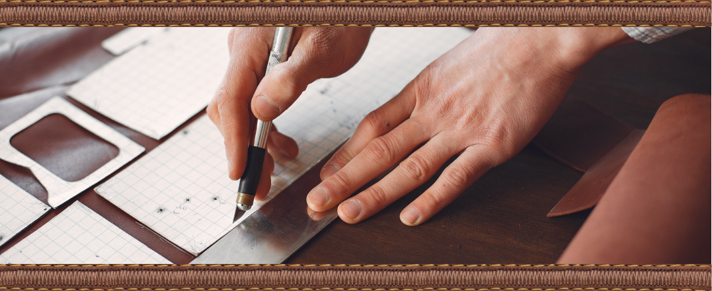
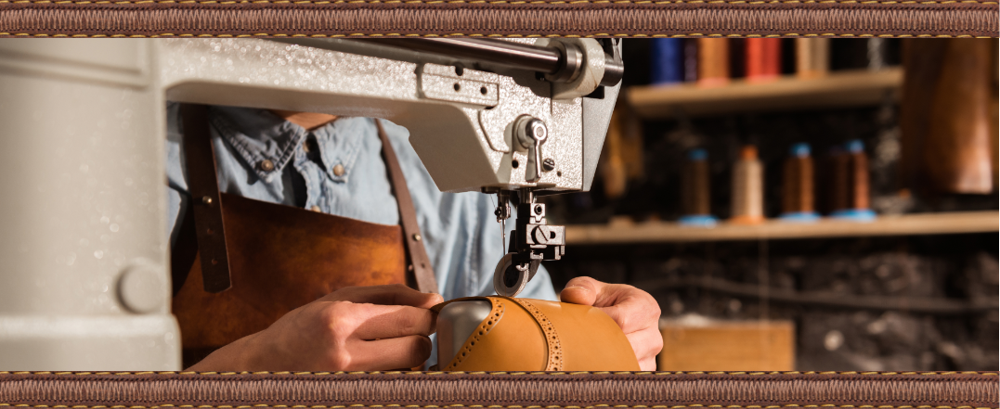
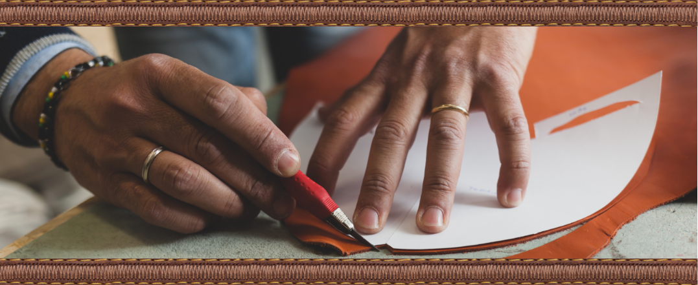
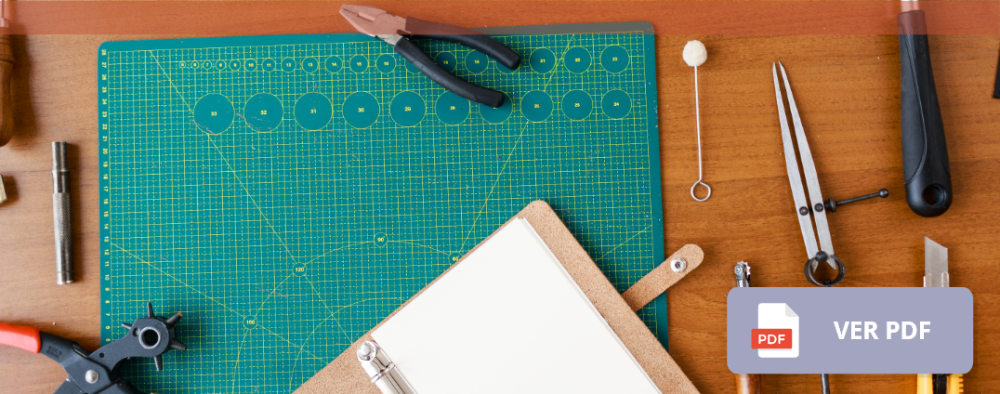
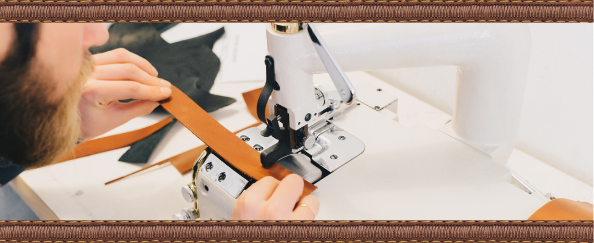
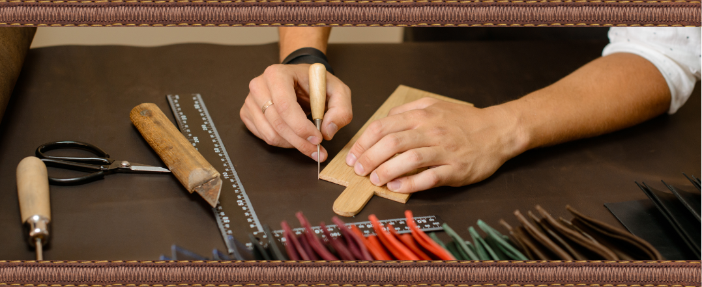
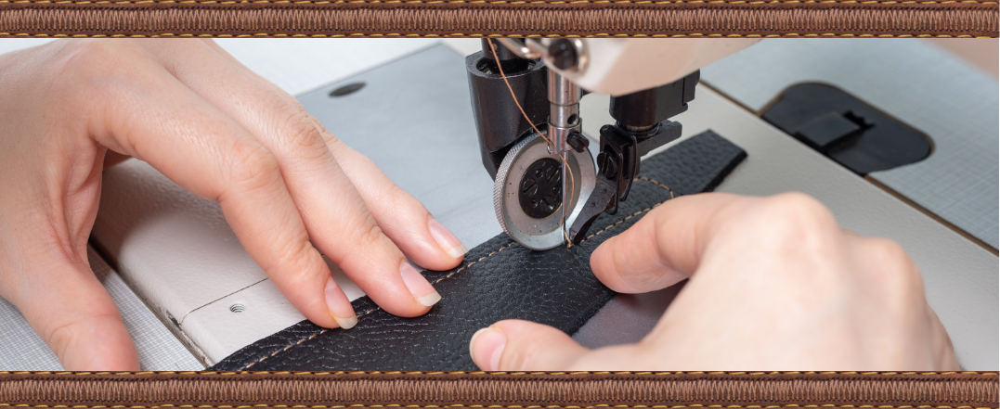

Introducción
Bienvenido a este componente formativo en donde se dispone la creación del modelo a desarrollar en el curso y por eso se disponen a continuación una serie de videos en orden para que entienda de la manera ideal el proceso productivo de marroquinería.
1. El proceso productivo
Este es el proceso habitual que se hace por parte de los marroquineros para la producción de los productos y es muy respetado porque gracias a él se logra el estándar anhelado.
2. La maquinaria para marroquinería
Las empresas han avanzado y pasaron de un espacio bien logrado con mucho trabajo de mano o manufactura a procesos industriales grandiosos en los que las máquinas juegan un gran papel, por eso se hacen necesarias en los talleres, en el siguiente video puede observar una muestra de éstas.
3. Herramientas en marroquinería
Las herramientas facilitan grandemente el proceso productivo y el trabajo en el mismo, cada una significa un desarrollo y funciona para algo especial y bien usadas son el mejor aliado del trabajador, revise el siguiente video donde se muestran algunas de ellas:

4. El corte de la muestra de comprobación.
Esta es la realización de la muestra de comprobación final para saber en qué material va a ser cortado cada elemento de la muestra de comprobación y las otras partes y del material como lo puede ver en los siguientes videos:
4.1 El corte de la muestra de comprobación
4.2 Corte del forro
4.3 Corte del cuero
Para lograr mayor profundidad en el campo del corte que es una realidad necesaria para todos los trabajadores de la marroquinería, es importante saber que desde este punto se tiene el proceso controlado en términos de costos, tiempos y recursos.
5. El desbastado
Desbastar es entendido como el proceso de quitar partes bastas del material o de algo para plegar o pegar las otras partes y facilitar el anclaje de las piezas definidas y generadas en el molde para esto se ve el siguiente video de una desbastadora que es una máquina que facilita este proceso de desbastado siendo complementado por el concepto de Losada (1995) “El desbaste a máquina es una tarea que consiste en rebajar el calibre del borde de las piezas para ensamblarlas o doblarlas, sin que queden protuberancias”.
Adicionalmente se recomienda que revise el material adicional relacionado al concepto en la cartilla Desbaste de pieles que se encuentra en el siguiente recurso:
6. Prearmar la pieza
Las piezas se componen de partes, las cuales están dispuestas en un orden especial para poder ser llevadas a su creación. A continuación, pueden observar el proceso necesario para prearmar una pieza de marroquinería, desde el alistamiento hasta la pintura de los bordes y brillos en su pieza como medios de finalización.
6.1 Prearmado de chapetas y manijas
6.2 Alistamiento previo
6.3 Troquelar
6.4 Cortar manijas
6.5 Acabados
7. Armado
Es, como lo dice Abril (2018) “proceso en el que se unen todas las piezas cortadas según el modelo” y tiene un orden específico según la pieza y la descripción en la ficha técnica del producto.
7.1 Armar
7.2 Armado de forro
8. La costura según el diseño de la pieza.
Es una de las partes del proceso productivo como lo expone Jaramillo (2006) en la descripción del oficio de la marroquinería y es el “trabajo de corte, pegado, doblado y costura del cuero, mediante la que se elaboran sobres, carteras, monederos, maletines, cinturones, entre otros, elaborados en cueros de excelente calidad” y su indicación es a unir dos o más partes por medio de un tercer elemento que puede ser hilo o algún sustrato adicional que una las piezas y se pueden hacer a mano o máquina como lo sostiene Jaramillo (2006) “las costuras deben ser muy fuertes ya sean a mano o a máquina”.
8.1 Costura de manijas
A continuación, se presenta el material que explica cómo se hacen las costuras en manijas, forro, chapetas para posteriormente cerrar el producto.
8.2 Costura del forro
8.3 Costura de chapetas
8.4 Cerrar la cartera
Posterior a la revisión de este material y los materiales anteriores se tiene completado el proceso de modelado en marroquinería en el que es necesario hacer la validación del material con todas las fichas técnicas tanto de producto como de proceso, estas fichas son los parámetros que evidencian el cumplimiento de los requisitos técnicos del producto.
Glosario
Herramientas:Son aquellos bienes tangibles que generalmente son de hierro o acero y que se usa con las manos y que sirve para realizar un determinado trabajo.
Máquinas:Son aquellos bienes tangibles que están formados por diferentes piezas móviles y fijas que aprovechan la energía que tiene para realizar un trabajo determinado.
Materia prima:Es el material extraído de la naturaleza susceptible de cambio o transformación industrial que se usan como base para la elaboración de nuevos productos.
Marroquinería:Es el arte del cuero donde éste se transforma en productos ya sea de pequeña, mediana o grande marroquinería.
Producto:Son bienes como mercancías u objetos, pero también pueden ser servicios, los cuales van a cumplir una función social al suplir una necesidad del mercado (consumidores). Zapatos, libros etc.
Material complementario
Referencias bibliográficas
Abril R, I. (2018). Análisis de la Cadena Productiva del Sector Industrial de Cuero y sus efectos en la producción de Calzado en la Provincia de Tungurahua. http://192.188.52.94/handle/3317/10787
Castaño, S., et Al., (2019). Herramientas de corte manual para el sector del cuero. Sennova.
Jaramillo O, A. (2006). Referencial nacional de oficios en cuero, capítulo oficios en cuero Bogotá. Artesanías de Colombia. https://repositorio.artesaniasdecolombia.com.co/bitstream/001/2713/6/INST-D%202006.%20116.pdf
Losada T, M. (1995). Calzado. Desbaste de pieles. Bloque modular 5, Módulo instruccional 40. Sena.
Fotografías y vectores tomados de https://www.shutterstock.com/ y https://www.freepik.es/
Licencia Creative Commons
CC BY-NC-SA
Ver licencia.